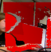
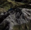
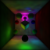
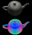
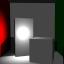
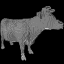
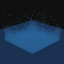

CIS 565: GPU Programming and Architecture
Fall 2013
University of Pennsylvania
Computer Graphics @ Penn


Course Overview • FAQ • Schedule • Student Work • Previous semester
CIS 565: GPU Programming and ArchitectureFall 2013
University of Pennsylvania |
|
|
Course Overview • FAQ • Schedule • Student Work • Previous semester |
This semester, the projects are:
|
|  |
Collin Boots and Dalton Banks @LotOfTinyRobots |
Conversion of RGBD Images to Textured Triangle Meshes with GPU |
|
Takashi Furuya and Qiong Wang @takfuruya and @Qiong0516 |
WebGL Shader Editor with Kinect Data | |
|
Nathan Marshak and Uriah Baalke @uriahjb and @MagentaWaffles |
PointMan-Renderer | |
|  |
Mikey Chen and Vimanyu Jain @_mChen_ and @vimanyuj |
Gaia - GPU terrain tessellation |
|  |
Ishaan Singh, Yingting Xiao, and Xiaoyan Zhu @MMFAPhoMap |
GPU Photon Mapper |
|  |
Yuqin Shao and Sijie Tian @YuqinShao and @sijietian |
Tile Based WebGL Deferred Shader |
|  |
Rohith Chandran and Vivek Reddy @rohith10 and @vivekviga |
Instant Radiosity using a Forward+ shader |
|  |
Cheng-Tso Lin @otaku690 |
Sparse Voxel Octree |
|
Ricky Arietta @rickyarietta |
Volumetric Clouds | |
|
Hao Wu and Guanyu He @wuhao1117 and @Guanyu_He |
WebGL Water Shader | |
|  |
Harmony Li and Joseph Tong @Harmo_li |
Position Based Fluids |
These projects were developed in six hours for a hackathon using Shadertoy.